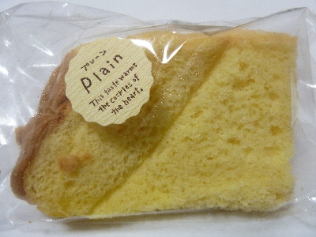
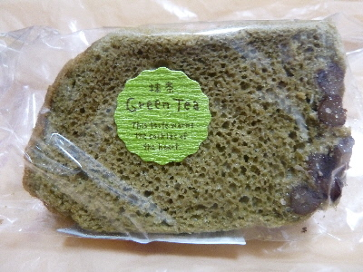
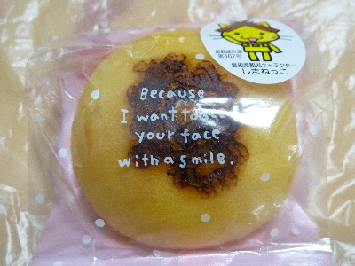
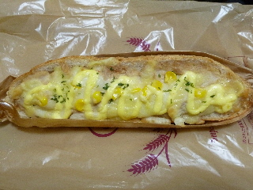
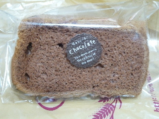
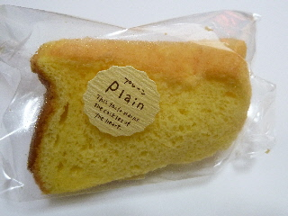

コンセルボふるさと館のくにびき米の粉のシフォン
2018/03/30
持って帰るときに、ちょっとつぶしちゃいました。

このシフォンは以前にも食べたことあるけど、こんな味だったかな？
レモン味で、ふわふわのレモンケーキを食べているようでした。
プレーン味ではないです。
島根県松江市殿町191＜ふるさと館内＞
2018/03/30
持って帰るときに、ちょっとつぶしちゃいました。

このシフォンは以前にも食べたことあるけど、こんな味だったかな？
レモン味で、ふわふわのレモンケーキを食べているようでした。
プレーン味ではないです。
2016/09/25
コンセルボ島根ふるさと館店でお菓子を買いました。

ふるさと館といえば、シフォンケーキな気がします。
130円でコスパがいいです。

しまねっこの焼印がいまいちですね。
ふんわりたまご 90円です。
ちょっと小さいので、こっちは割高かも？
2014/12/28
松江歴史館の帰りに島根ふるさと館で買い物をしました。

ツナコーンです。（145円）
味がしっかり入っていて美味しかったです。あと、紙が付いてると食べやすくていいですね。

チョコシフォンです。（130円）
米粉で出来てるんですが、違和感がなかったです。
ほどよい弾力感があるシフォンで、いい食感でした。
これお勧めです。
2011/03/23
パン屋さんのシフォンケーキですが、ちゃんと包装がしてあるのでしっとりとしていました。

ふんわり、しっとりでよくできてました。
ケーキ屋さんのシフォンみたいで美味しかったです。
コンセルボのお店屋さんて沢山あるんですね。
ホームページで店舗検索できました。
http://www.conservo.info/index.htm
近くの観光地
松江城